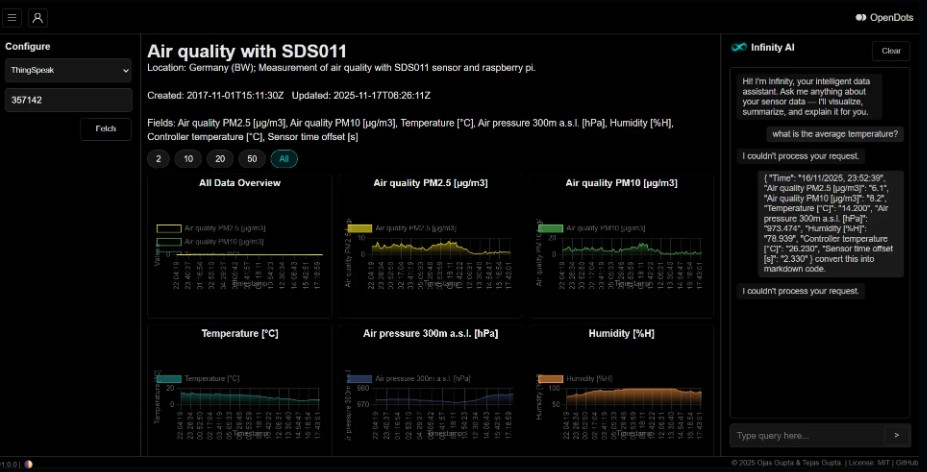

Real-time air quality monitoring with AI-powered insights — powered by OpenDots

Everything you need to collect, visualize, and analyze IoT data in one unified platform
Build pixel-perfect dashboards with drag-and-drop widgets. Flexible layouts, real-time updates, and beautiful visualizations.
WebSocket-powered live data streams. See sensor changes instantly with zero latency and automatic reconnection.
Ask questions in natural language. Get trends, anomalies, and predictions powered by advanced AI models.
Seamlessly connect with ThingSpeak, Adafruit IO, Blynk, Grafana, and any MQTT broker. Works with your existing setup.
Create public project pages. Perfect for academic research, student projects, and community monitoring initiatives.
Integrate live video feeds alongside sensor data. Monitor visual and numerical data in perfect synchronization.
Student and research projects with easy data sharing and professional visualization
Track air quality, weather patterns, and environmental data for communities
Real-time monitoring and analysis for scientific experiments and studies
Home automation, energy monitoring, and industrial IoT dashboards
Everything you need to know about OpenDots
OpenDots is an open-source, integrated IoT data visualization and insight platform. It helps users turn raw sensor data into meaningful, real-time visuals and AI-powered insights. It is hardware-agnostic, data-first, and easy to extend.
OpenDots integrates with ThingSpeak, Adafruit IO, Blynk, and Grafana out of the box. It also supports Arduino-based systems, MQTT brokers, and any platform that can send HTTP/WebSocket data.
Yes! OpenDots is 100% open-source under the MIT License. You can use it freely for personal, academic, and commercial projects. Contributions from the community are always welcome.
Infinity AI is OpenDots' built-in chat-based assistant. You can ask it natural-language questions about your sensor data — it provides trends, summaries, anomaly detection, and predictions based on your live data stream.
The frontend is built with HTML, CSS, JavaScript, and React.js. The backend uses Node.js and Express.js with MongoDB for storage. Real-time communication is handled via WebSockets, and AI features are powered by Python and LLM integrations.
Head over to the GitHub repository, fork the project, and submit a pull request. You can also open issues for bugs or feature requests. All contributors are credited on the project page.
Yes! OpenDots supports live camera feed integration alongside sensor data, allowing you to monitor visual and numerical data in perfect synchronization on the same dashboard.
Absolutely. OpenDots supports deployment on Vercel, Netlify, and standard cloud hosting. Check the documentation for step-by-step deployment guides including environment variable configuration and database setup.
Join developers and researchers building the future of IoT visualization